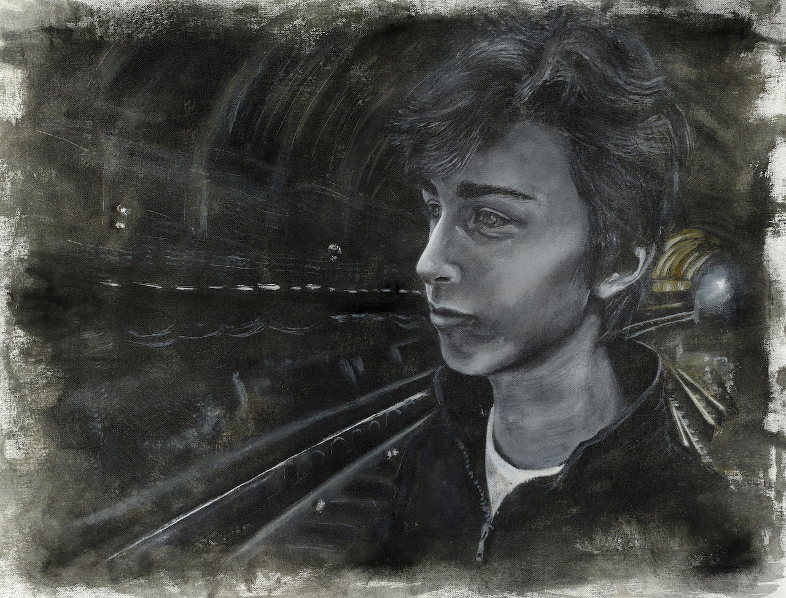

In anticipation of the coming DANGER issue, we reintroduce the Symposium—a collection of artistic creation centering on a single topic. This month, Ariana Chaivaranon, Owen Ojo, Francesca Violich, and Sarah Toomey contemplate “Danger.”
ONE

"Wait" is part of a series of paintings that place figures within a narrative of death. This series, painted on loose canvas, is tacked directly to the wall of the exhibition space, lending a rough immediacy and implying transience. The subjects are dislocated from the time and space they occupy through the use of distinct coloring and paint application between the figure and ground. Both the formal elements and the narrative of the piece play to the disturbance of the viewer.
By Ariana Chaivaranon ‘18
TWO
I.
so i have taken taekwondo, broken a board with one hand the summer going into fourth grade. it was a class underneath a train station, one of the ones in the bronx, somewhere to put my sister and me when my mother was at the clinic a few blocks down the street. what luck, finding the taekwondo class. we had to read books sometimes, in between the kicking and punching, and i remember i was thinking about pages when i slammed the wood with a hammer fist. my mother came to get us at the end, so proud because i could hurt somebody. she put the pieces into her purse and i remember fingering the clasp, leaning against her arm under the tarp: smell of gasoline and smoke billowing in the air, railroad rumbling above our heads.
II.
another thing about it: she takes tkd now, my sister. smaller than me. and cuter. and kinder. she will not say anything when a boy hits her, yet she is afraid of getting attacked by her boyfriend. she doesn’t have one, not now at least, only friends who are male, who are cool sometimes, even funny. her friend thinks he’s joking, shoving people. it doesn’t really hurt them but still, she is tiny. she smiles too much. another thing: you can never hit my sister, even if you’re miles away, even if you say you’re just kidding and it was just a little push and she gets up after she falls. about me, i wouldn’t have beaten him up, but he pushed her down and she wasn’t smiling when she stood up again.
III.
i take rape-agression defense because my mother wants me to learn how to fight off men, i say i just want to walk down a street in the dark without feeling the adrenaline rush into my legs. that open fence is just so close and scares me to death in the night. my mother wants me to quit the advocate because i’m always out alone after meetings, and this is a frightening thing. women discouraging women from living. which is the more frightening thing?
IV.
just like the subway. a great fear of mine. catcalled at atlantic terminal, caressed in the t, doesn’t matter, the subway is bigger and plus it has germs. i get dizzy clutching my pockets because my cousin got slashed in between crowds. somebody wanted her wallet. i heard a boy got stabbed and he sat there, bleeding to death, public indifference killed him at nineteen. what you do to not get hurt: avoid people.
V.
people say you die, you will get shot and die; sick and die; hit by a car, someday, and die. you will think you killed somebody in an accident because you know what it’s like, to break in one of those, to feel the glass inside you and breath oh god i’m over; you will walk to school one day and people say they are looking for you, to take you. ‘we live,’ she says, ‘to keep distance from violence.’ she takes my hand, bruised from the hammer fist, draws it away from the chains on her purse. my sister laughs, the sides of her taekwondo uniform hanging open. i look up and am confused by the sky, by the trains, still shaking the sidewalk.
By Owen Ojo ‘19
THREE
For one man, born on a balmy March day exactly twelve months after his brother, in a year where two consuls met their bloody deaths at Mutina, danger crept into both his writing and his life. His name was Publius Ovidius Naso. The year was 43 B.C. And the danger was two things: Love itself, and Ovid’s decision to write erotic poetry in a regime—headed by the cold and calculating Octavian—that prized chaste morality above all else.
Ovid and his brother were trained in oratory and rhetoric, skills fitting for their status: they were equestrians, the Roman equivalent of the knighted class. But Ovid felt his calling to the arts early on, and by eighteen he was doing his first recitations. His father disapproved of his son’s decision to devote his life to poetry (a relatable obstacle, as any aspiring authors out there will know), telling young Ovid that even the famous Homer of Iliad fame didn’t get rich off his writing (touché). Ovid listened dutifully, but as always has been the case, a true artist cannot refuse his calling, and soon he had succumbed to his poetic Muse.
Much of Ovid’s work draws strong parallels between love—often personified as Amor—and danger, pain, war, and destruction. To him, a lover was a soldier, subjected to all the same dangers that wartime might offer. Militat omnis amans, et habet sua castra Cupido, he writes in Amores I.IX: all lovers serve as soldiers, and Cupid has his own camp. And Ovid’s Cupid is a far cry from the chubby baby with tufted wings that graces Renaissance art. Cupid was a formidable enemy, a powerful god who had mastery over all: the very definition of danger. His power even trumped that of gods.
We are all familiar with the phrase omnia Amor vincit—Love conquers all, coined at the end of Virgil’s Eclogues. Pause. When you think about it, this isn’t actually as romantic as it sounds. (Millions of teenagers who had these three words tattooed on their body start to panic.) Love is a conquering force. This same verb vinco, vincere is used in military histories to describe utter devastation of a land. Veni, vidi, vici; I came, I saw, I conquered. Love as a primal desire to conquer is present from the very birth of Eros, the Greek counterpart of Cupid. Later mythological accounts mark Cupid as the son of Venus and Mars, god of war, but his figure has primordial origins and came before any of the other Hellenic gods or their Roman counterparts, as seen in this description from Aristophanes’ Birds:
At the beginning there was only Chaos, Night, Darkness , and the Abyss. Earth, the Air and Heaven had no existence. Firstly, black-winged Night laid a germ-less egg in the bosom of the infinite deeps of Darkness, and from this, after the revolution of long ages, sprang the graceful Love (Eros) with his glittering golden wings, swift as the whirlwinds of the tempest.
Ovid’s Cupid is a vengeful deity, aware of his perceived inferiority and ready to attack anyone, god or man, who speaks ill of him. In the Metamorphoses, Apollo sees Cupid holding a bow, and patronizingly asks Cupid why he is playing with a man’s weapons, to which Cupid replies:
“Figat tuus omnia, Phoebe, te meus arcus; quantoque animalia cedunt cuncta deo, tanto minor est tua gloria nostra.'”
“Let your bow pierce everything, Apollo, but let my bow pierce you: by as much as all living things yield to God, by that much is your glory lesser than mine.”
Ovid envisions Cupid in a vast victory triumph, carried in a golden cart drawn by doves and flanked by his comrades Error (Mistake), Furor (Anger) and Blanditiae (Flattery); behind him follow rows and rows of captive men and women, bound in chains, enslaved into his service. As he begs Cupid to spare him, as he has no lover, Ovid himself is shot, and his epic poetry—his early Metamorphoses, written in dactylic hexameter—loses a metrical foot, becoming elegiac couplets, the meter of love elegy. Uror, et vacuo pectore regnat Amor, he writes. I burn, and Love reigns in my empty heart.
❖
She knows too the error that misled me, when I was ruined,
that there was guilt, but not wickedness, in my actions.
Surely she’s good to me now because she harmed me before,
when she was charged, with me, for a mutual crime.
Since they were once destined to be dangerous,
I might wish I’d never touched the Pierian rites.
But what can I do, now? Their very power holds me,
and, mad-man that I am, though song has injured me,
it is still the song I love.
— Ovid, Sadnesses IV.I
The night that Ovid was exiled from Rome, he listened to the voices of dogs and men grow quieter and quieter, until the moon rose over the Capitoline Hill and the city was silent. Few friends showed up to say goodbye to him, fearful that by visiting Ovid they too would incur the wrath of Augustus. He paid the price for his carmen et error, his poem and his mistake, all that he ever writes of the reason for his exile to Tomis, a dismal outpost on the Black Sea. The poem was likely his racy Ars Amatoria, The Art of Loving, which directly went against Augustus’s call for moral reform after the debauchery of the late Republic and was banned from all three of Rome’s public libraries. The mistake? Perhaps a scandalous affair or more likely general lèse-majesté, in line with Ovid’s character: playful, almost to the point of subversion. He was never tried for any crime; his exile was ordered by Augustus himself in a direct imperial edict. For Ovid, the choice to continue to produce poetry under such a regime as Augustus’s was as dangerous as he imagined his poetic subject to be.
Life in Tomis was a living death for Ovid. On the shores of the Black Sea, he had no audience; no one spoke Latin so far from Rome. He had no friends and no family. The luxuries of urban life were a distant memory. He was forced to abandon works he had spent years on, as he no longer could do the necessary research. He spent years dreaming of home, writing letters to his wife and friends of his desolation and sorrow. In exile, Ovid composed his Tristia, Sadnesses, and Epistulae Ex Ponto, Letters from the Black Sea, in which he begged Augustus to forgive him and let him return to his native city.
Augustus, cold-hearted as he had always been, never relented.
Ovid died alone in Tomis after seven long and lonely years.
His grave was never found.
❖
Few depictions of the Emperor Augustus survive today. The most famous is displayed in the Vatican: Augustus, set in creamy marble, cheekbones sharp in his austere face, holds up his left hand, about to begin a rhetorical command. At his feet is Cupid, gazing upwards as if in admiration at Rome’s great conquerer. And so the two dangers that brought Ovid to power and tore him down found in each other a common ancestry; for legend has it that Augustus, like Cupid, descended from Venus herself.
By Francesca Violoch ‘18
FOUR
i.
submerged nausea that forgets your tongue,
coming back paired and folded, cat to
camel or sigma and coors.
only scanning the left side and the same
number of ribs, in the lower right-hand,
like beige and tearing.
cupped above two red xs and a diagram
of hatched squares, to waste of
gritty piercing bowls.
a remarkable journey out of the office on
cube platform of unzipped graphics,
on pixelating aphrodisiacs—
ii.
left of stale, this virus becomes
communicative, gathering itself
into threads, piles interwoven—
still separate, across the room. next
to a copy of the brothers karamazov,
laid out, untied, i am getting rid of the
excess. three clips later, i am discovered
tearing into some imbued post-it notes of
leadership and uniform, no longer taut to
the charcoal that flips into cover, the
cover that pulls on the lobes, all with
brow bones stitched to my cheeks. if
the presumed aura of the virus
hugged the body, creased, as if
escalating toward that new neon
climax of feverish contact— tripped and
cut its own trails in downward motion—
if it had only blushed, feverishly open,
exposed and sullen at the waist, laterally—
i would have been made knit. i would have
been made manifest in this bold repentance,
stumbling over the binding with my thumb
pressed to a bed of cells who would shriek
beneath it. i would be the bleak, would be
the winter, and let it spread. left
shared, i never had three ghosts
anyway. february is no different—
By Sarah Toomey ‘19